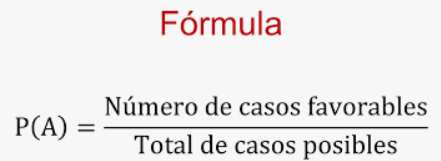

Probabilidad
Introducción:
En está sección abordaremos los conceptos de equiprobabilidad y probabilidad, y exploraremos cómo una simulación puede ilustrar estos conceptos en acción. Aprenderás a identificar cuándo la equiprobabilidad puede ser asumida en un problema y cómo, al incrementar el número de repeticiones en una simulación, la frecuencia observada de un evento tiende a aproximarse a su probabilidad teórica.
Conceptos Clave:
Probabilidad: La probabilidad es una medida numérica de la posibilidad de que ocurra un evento específico. Se define como la razón entre el número de eventos favorables y el número total de eventos posibles. Matemáticamente, se expresa como:

Por ejemplo, al lanzar un dado justo, la probabilidad de obtener un 3 es 1/6, ya que hay 1 resultado favorable (un 3) y 6 resultados posibles.